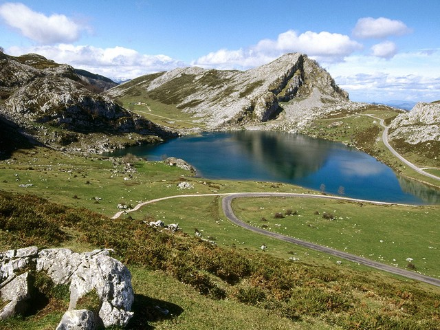

LOGOTIPO
Mis buscadores
Otras informaciones
Otras informaciones.Otras informaciones.Otras informaciones. Otras informaciones.Otras informaciones.Otras informaciones.Los parques Nacionales
Información principal.
Contenido principal Contenido principalSierra de grados.
 La sierra de Gredos es una sierra de España perteneciente al Sistema Central, situada entre las provincias de Ávila, Cáceres, Madrid y Toledo.
Su máxima altitud se da en la provincia términos municipales de Zapardiel de la Ribera y Candeleda. Está declarada parque regional.
Gredos es una de las sierras más extensas del Sistema Central y está compuesta por cinco valles flubiales:
Alto Tormes, Alto Alberche, Tiétar Oriental, Tiétar Occidental y la Vera, Y valle del Ambroz.
La sierra de Gredos es una sierra de España perteneciente al Sistema Central, situada entre las provincias de Ávila, Cáceres, Madrid y Toledo.
Su máxima altitud se da en la provincia términos municipales de Zapardiel de la Ribera y Candeleda. Está declarada parque regional.
Gredos es una de las sierras más extensas del Sistema Central y está compuesta por cinco valles flubiales:
Alto Tormes, Alto Alberche, Tiétar Oriental, Tiétar Occidental y la Vera, Y valle del Ambroz.
Pirineos.
 Los Pirineos, o el Pirineo como prefieren denominar sus habitantes al referirse a una parte o región de éstos (español: Pirineos; francés: Pyrénées; catalán: Pirineus; occitano: Pirenèus; aragonés: Pireneus/Perinés; euskera: Pirinioak o Auñamendiak), son una cordillera montañosa situada al norte de la península ibérica, entre España, Andorra y Francia. Se extiende a lo largo de 430 km desde el mar Mediterráneo (cabo de Creus) al este, hasta su unión con la cordillera Cantábrica al oeste, donde se ha establecido la falla de Pamplona como su límite convencional geológico, no existiendo interrupción geográfica entre ambas formaciones.1 En su parte central tiene una anchura de unos 150 km. En lenguaje corriente la palabra Pirineo se aplica al conjunto de altas sierras fronterizas hispano-francesas. La denominada Pirineos Centrales es el área geográfica de la cordillera de los Pirineos que se extiende aproximadamente, según las diferentes obras, entre las cumbres de Somport, en la parte occidental, y el macizo de la Maladeta, en la oriental.
Los Pirineos, o el Pirineo como prefieren denominar sus habitantes al referirse a una parte o región de éstos (español: Pirineos; francés: Pyrénées; catalán: Pirineus; occitano: Pirenèus; aragonés: Pireneus/Perinés; euskera: Pirinioak o Auñamendiak), son una cordillera montañosa situada al norte de la península ibérica, entre España, Andorra y Francia. Se extiende a lo largo de 430 km desde el mar Mediterráneo (cabo de Creus) al este, hasta su unión con la cordillera Cantábrica al oeste, donde se ha establecido la falla de Pamplona como su límite convencional geológico, no existiendo interrupción geográfica entre ambas formaciones.1 En su parte central tiene una anchura de unos 150 km. En lenguaje corriente la palabra Pirineo se aplica al conjunto de altas sierras fronterizas hispano-francesas. La denominada Pirineos Centrales es el área geográfica de la cordillera de los Pirineos que se extiende aproximadamente, según las diferentes obras, entre las cumbres de Somport, en la parte occidental, y el macizo de la Maladeta, en la oriental.
Picos de Europa
 Los Picos de Europa son un macizo montañoso localizado en el norte de España que pertenece a la parte central de la cordillera Cantábrica. Aunque no muy extenso, su cercanía al mar hace que sea pródigo en accidentes geográficos de gran interés. En la actualidad el Parque nacional de los Picos de Europa constituye el segundo parque nacional más visitado de España, después del Parque nacional del Teide (Tenerife).1